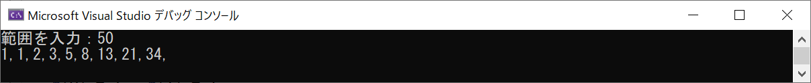
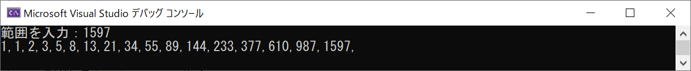
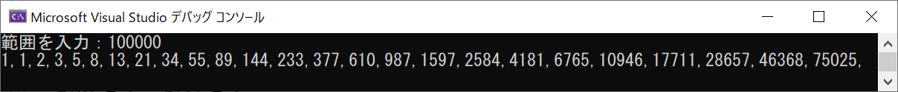
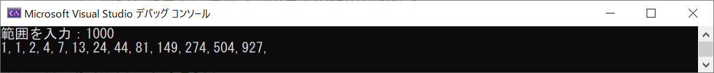
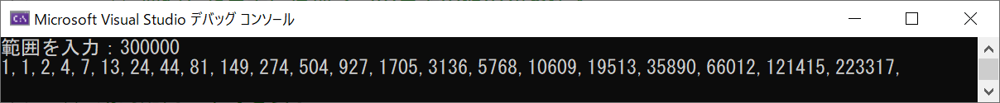

メモ：C 動的配列
C言語で動的に配列を扱うことができないかと調べてみたら、
malloc
を使うのだとわかった
使ってみる
フィボナッチ数列
を題材にテストコードを作成
test.c
test.c の実行結果



幾何学的に桁が増えてく様が魅惑的
変数を共用させたり、インクリメントの前置を利用したり、スッキリしたコードが書けたのでは⁉
ついでに
トリボナッチ数列
にしてみる
test2.c
３ヶ所の修正でできた
test2.c の実行結果


メモ
①
malloc
では
sizeof()
で全てのサイズは取得できない
②
malloc
や
realloc
で増やしたりした領域のサイズを知りたければ、別途変数を用意して管理するしかない
③
realloc
で頻繁に領域を変更すると、メモリが散らかってくるのであまりやらないほうが良いよう
④
最近のパソコンは性能が良いので、事前に極端に大きなサイズの配列を用意するやり方でも良いよう
参考になったサイト
配列を自由自在に作る
mallocで確保した領域のサイズを得たい
sizeofで変数のサイズを取得するときの注意点
戻る